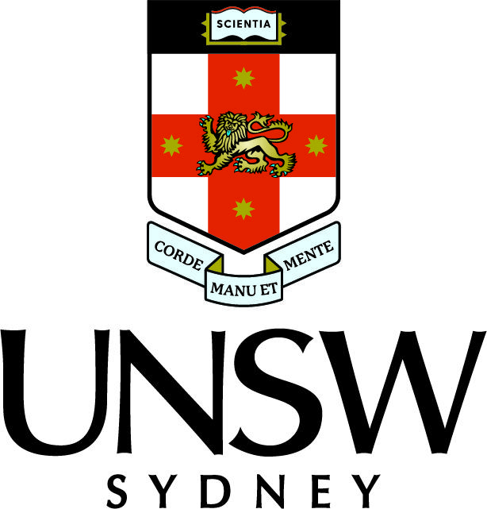

I’m a Mechatronics Engineering graduate from UNSW with hands-on experience in robotics, automation, and smart systems. I enjoy solving complex problems and building real-world projects using tools like SolidWorks, MATLAB, and C++. My goal is to work on projects that integrate hardware, software, and intelligent control systems to make technology more efficient and accessible.
Experience
Experience content goes here.
Education

University of New South Wales
Bachelor of Mechatronics Engineering (Honours)
2020 – 2024
- Thesis: Advanced Fault Detection using AI and IoT – Predictive model using CNN and Random Forest with IoT sensor integration.
- Key Projects: UR5e Connect4 Robot, Micromouse Maze Robot, Real-Time Fault Monitoring Dashboard.
- Achievements: 15% International Scholarship for academic merit, 5,000 AUD NMIMS Transfer Scholarship.
Projects
Projects content goes here.
Skills
Skills content goes here.